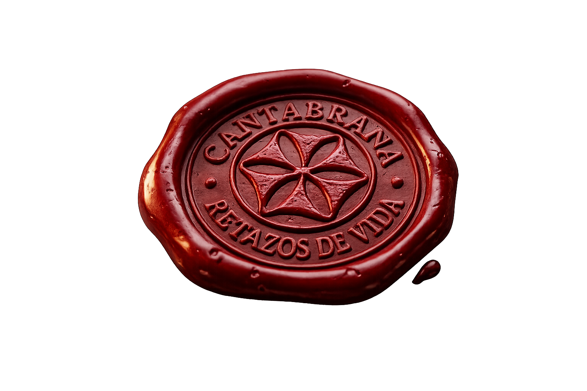
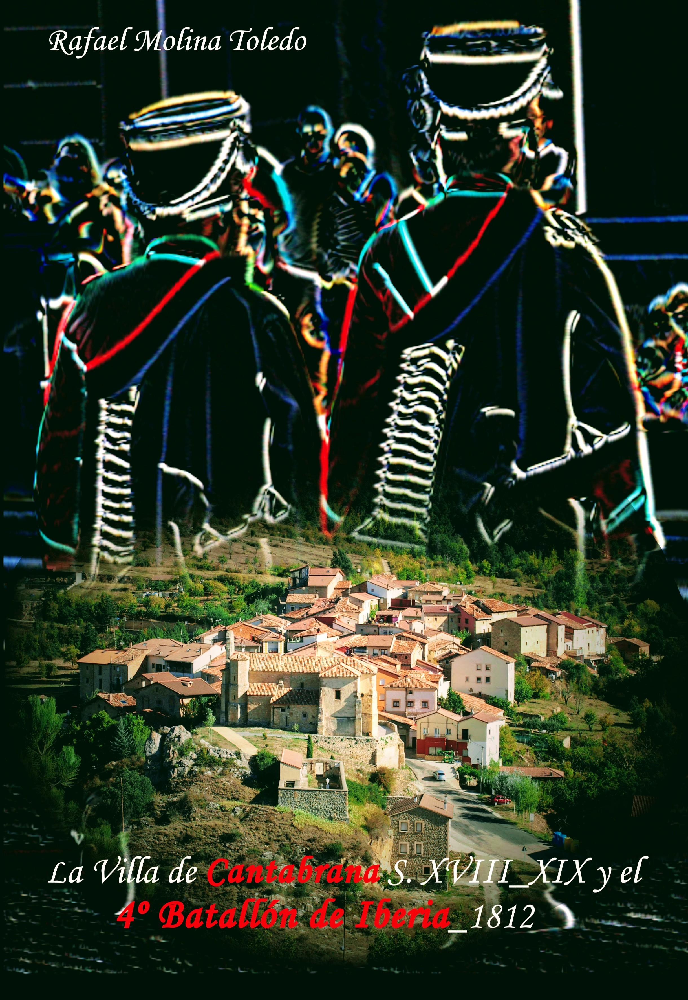
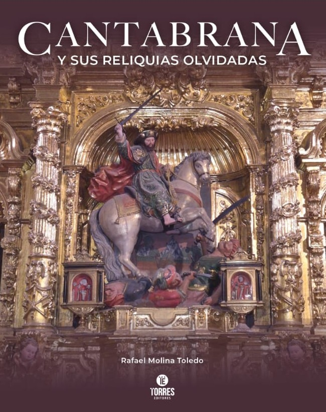

La Villa de Cantabrana, S. XVIII-XIX y el 4.º Batallón de Iberia 1812 (Autoeditado, 2016).
Tocados por la Historia: En el Valle de las Caderechas (Rebelión Editorial, 2023).

Cantabrana y sus reliquias olvidadas (Torres Editores, 2025).
Cantabrana es un pequeño municipio de la provincia de Burgos, en Castilla y León. Como tantos pueblos del interior, guarda en su memoria una tradición oral y musical que durante décadas estuvo a punto de desaparecer.
Las voces que escuchas pertenecen a Julián Ojeda Ojeda, Gregorio Ojeda Peña, Pedro Félix García Linaje, Lucía Ojeda Peña, Cecilio José Díaz Linaje, Elena Díaz Linaje, Eleuterio Peña Rodríguez y Miguel Alonso Peña, entre otros. Vecinos de Cantabrana que preservaron estas jotas y canciones como parte viva de su identidad.
Este archivo sonoro fue recopilado y digitalizado por Rafael Molina Toledo como parte de un esfuerzo personal por preservar el patrimonio cultural inmaterial de Cantabrana. Las grabaciones corresponden a registros del archivo familiar Molina_Prado.
Se recogen estadísticas de uso anónimas (sin datos personales ni cookies) para mejorar la experiencia.